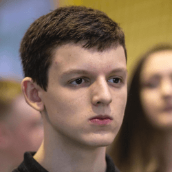
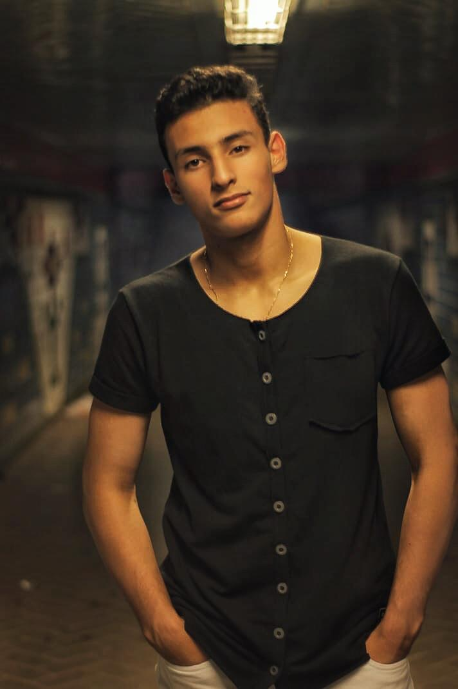

| Josynei de Souza Professor |
| Angela Ribeiro Professor |
|  | Anthony Vinicius Dos Santos MüllerAluno 2º Info A, responsável pelo site |
 | Gabriel Eduardo de SouzaAluno 2° info B, responsável pelo site |
| Eduardo Da Rocha Weber Aluno |
Luiz Cirilo Tomasi NetoAluno 2° Info A, responsável pelo site | |
|  | Gabriel Ricardo Ramos De Moraes |
| Gilvana Ghizzi Aluno |
| Giovani Liskoski Zanini Aluno |
| Thayná Ribeiro de Souza Aluno |
| Gustavo Marinho Lioi Nascentes Aluno |
| Vinícius Nunes Benfica dos Santos Aluno |